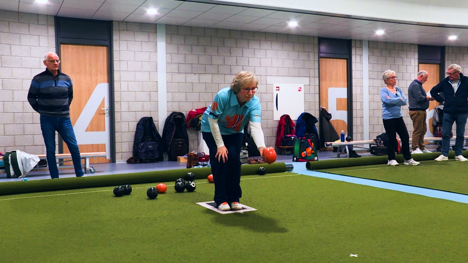

Maaltijdbezorger beroofd
in Tussen de Vaarten
Donderdagavond (Sinterklaasavond) werd een maaltijdbezorger beroofd aan de Cézannestraat in Tussen de Vaarten-Zuid. De politie zoekt getuigen.
Volgens de politie reed de 16-jarige bezorger rond 18.30 uur terug naar het restaurant na het afleveren van zijn bestellingen, toen hij ter hoogte van het Skatepark onder de Hagevoortdreef werd tegengehouden door een jongen die de maaltijdbezorger iets wilde vragen. Vervolgens zag het slachtoffer vanuit zijn ooghoek twee andere jongens opduiken waarna hij onder bedreiging van een groot mes werd beroofd van zijn smartphone en draadloze oordopjes.
Het drietal is vervolgens weggerend in de richting van het Matissepad.
Bowlsspeelster Schaft grossiert in Nederlandse titels
De Almere Bowls Club (ABC) uit Almere heeft maar 20 leden, maar is op nationaal niveau uiterst succesvol. Bij de club speelt Saskia Schaft die zich de beste Nederlandse bowlsspeelster mag noemen. De 54-jarige Almeerse presteert al jarenlang op nationaal topniveau. Ze grossiert in Nederlandse titels.
Volgens voorzitter Jan Reinders van ABC Almere is bowls in Nederland een kleine sport. De bond heeft volgens hem circa duizend geregistreerde leden. Hij is trots dat ondanks het lage ledenaantal zijn club zo goed presteert.
Schaft heeft zich met haar goede prestaties geplaatst voor de wereldkampioenschappen in- en outdoor die volgend jaar worden gehouden.

Schaft heeft zich met haar goede prestaties geplaatst voor de wereldkampioenschappen in- en outdoor die volgend jaar worden gehouden.
Tussenring weer open na aanrijding
Bij een ernstige aanrijding op de Tussenring in Almere zijn volgens de politie twee gewonden gevallen. Zeker twee auto's zijn maandagochtend rond 9:00 uur op elkaar gereden.
De hulpdiensten waren maandagochtend massaal ter plaatse. Er werd ook een traumahelikopter opgeroepen.
De Tussenring is vanaf afslag Tussen de Vaarten tot de Hogering afgesloten geweest. Dat duurde tot het begin van de middag.